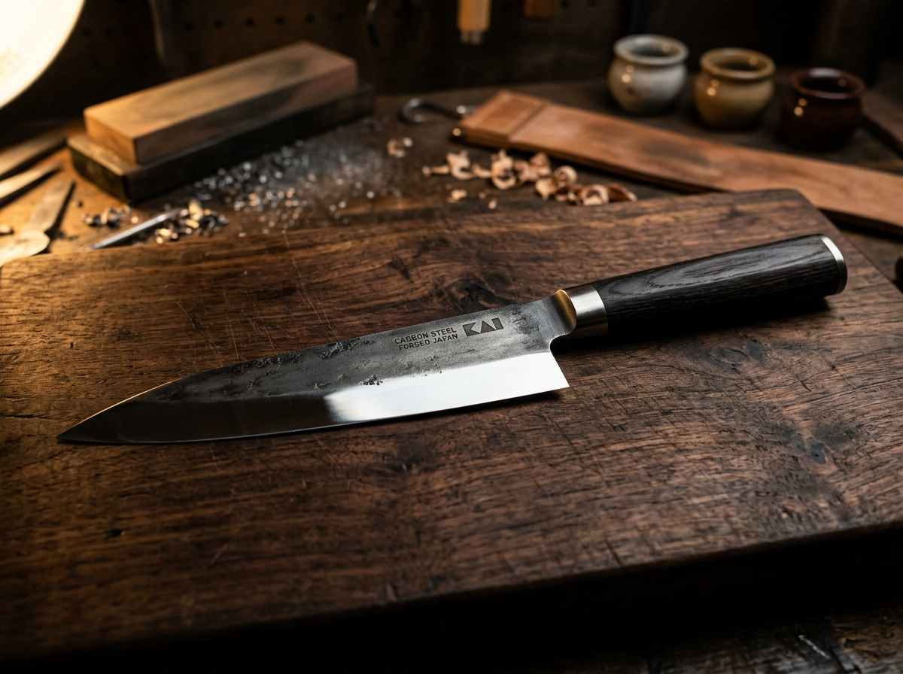

Core Service
Double-Bevel
Chef Knives
Full waterstone progression for German and French chef knives. We restore the continuous belly curvature and refine apex sharpness for effortless daily slicing.